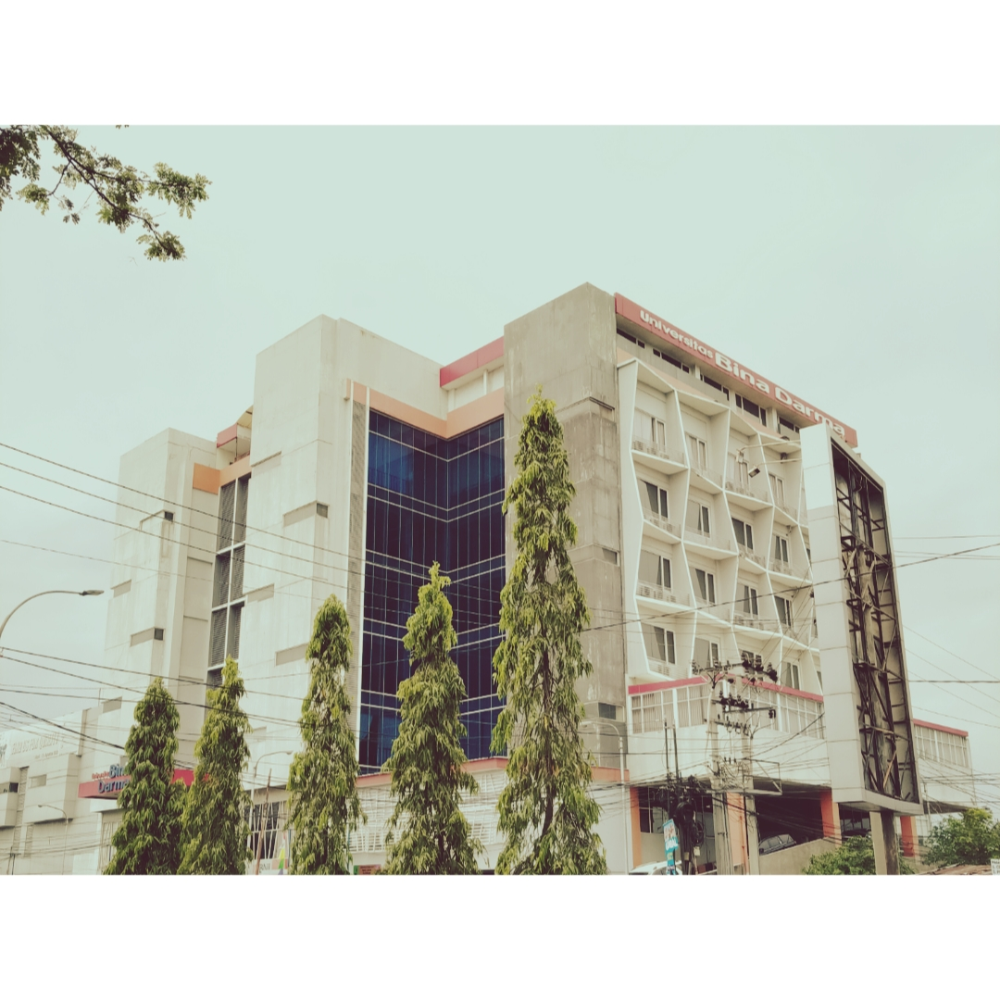
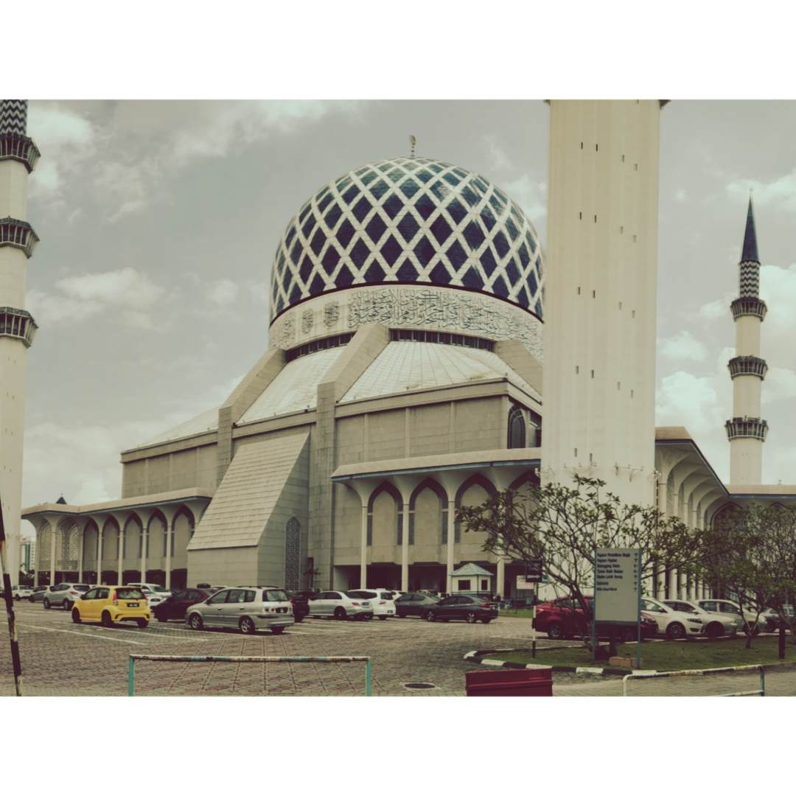
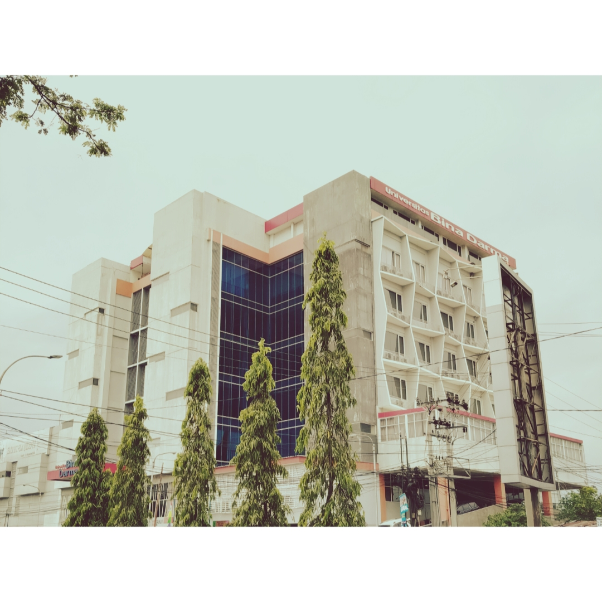
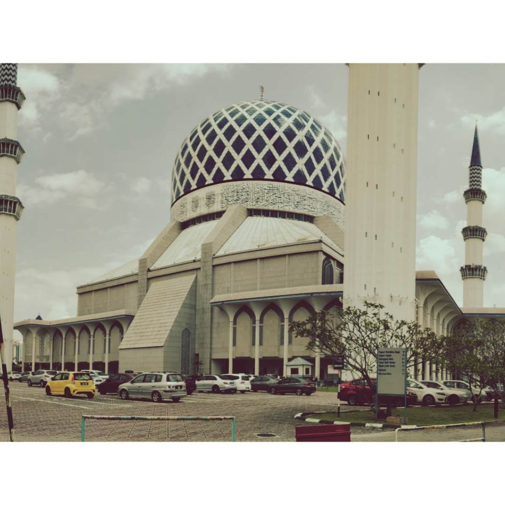

Perkenalkan saya Gilang Ramanda Purba biasa dipanggil Gilang. Saya merupakan lulusan Sarjana Komputer dengan program studi Sistem Informasi fakultas Ilmu Komputer dari Universitas Bina Darma Palembang dengan ipk 3,37 / 4,00. Pada saat ini saya berusia 24 tahun. Saya lahir dan besar dikota Prabumulih, Sumatera Selatan sampai saat ini.
Sebagai lulusan Sarjana Komputer yang bercita-cita tinggi untuk memasuki dunia kerja secara profesional dengan penuh semangat dan keinginan kuat untuk belajar serta berkontribusi secara maksimal. Meskipun saya adalah seorang Fresh Graduate yang minim akan pengalaman, tapi saya akan dapat tumbuh dan dapat dengan mudah berkembang dilingkungan yang cepat dan dinamis.
Dalam kurikulum pendidikan Sistem Informasi, saya telah mendalami konsep-konsep yang berkaitan dengan manajemen data, analisis bisnis, dan implementasi sistem. Proyek akhir saya, yang fokus pada efisiensi produksi melalui sistem informasi terintegrasi, menunjukkan dedikasi saya terhadap penerapan solusi teknologi untuk meningkatkan proses operasional.
Saya memiliki pengetahuan dan keterampilan teknis dasar dalam mengoperasikan Microsoft Office, Front End-Developer, Editing Photo, Photography dan Ui/Ux Designer.
Saya juga memiliki pengalaman diluar dari bidang IT sebagai Quality Assurance PT. SRI REJEKI ISMAN TBK. yang dimana penggunaan teknologi sangat minim digunakan pada saat kerja, yang dimana tugas saya berfokus pada inspeksi kualitas, mengidentifikasi masalah, mengawasi proses produksi, menerapkan tindakan korektif, dan memastikan kepatuhan terhadap standar industri.
PT. SRI REJEKI ISMAN Tbk. atau dikenal dengan Sritex, adalah salah satu perusahaan tekstil terbesar di Indonesia dan Asia Tenggara. Didirikan pada tahun 1966, perusahaan ini berkantor pusat di Solo, Jawa Tengah. Sritex bergerak dalam produksi berbagai jenis tekstil, mulai dari benang, kain, hingga pakaian jadi. Produk-produk Sritex meliputi seragam militer, pakaian kerja, pakaian kasual, dan berbagai produk tekstil lainnya yang dipasarkan baik di dalam negeri maupun internasional. Perusahaan ini dikenal karena integrasi vertikalnya yang mencakup seluruh rantai produksi tekstil, mulai dari pemintalan, tenun, pewarnaan, hingga konfeksi.
Peran dan Tanggung Jawab :
- Melakukan pemeriksaan terhadap material yang digunakan dalam produksi dengan secara rutin untuk memastikan kesesuaian dengan standar kualitas
- Menyelesaikan target pengecekan 60 pcs produk dengan target waktu 60 menit
- Beradaptasi dengan lingkungan kerja secara mandiri maupun berkelompok
- Ikut serta dalam menerapkan standar ISO - 9001 – ISO - 1400
- Mengidentifikasi masalah dan memberikan umpan balik dengan jelas dan ringkas baik secara lisan maupun tertulis
- Memastikan bahwa semua proses produksi dan produk akhir telah memenuhi standar kepatuhan industri
- Mencatat hasil temuan pemeriksaan, serta meyusun laporan dan melaporkan hasil temuan
- Teliti dan detail terhadap produk yang telah selesai diproduksi dan memastikan seluruh aspek telah sesuai dengan standar kualitas
- Mencantumkan status produksi, baik tertunda, maupun ditolak dengan berkonsultasi langsung dengan supervisor
Keahlian: Mengelola Waktu · Penyelesaian Masalah · Kerjasama Tim · Pengambilan Keputusan · Komunikasi Skill · Qa/Qc · Dispiln · Cekatan · Teliti dan Detail
Saya adalah seorang yang mencintai dunia Photography. Photography adalah salah satu hobi yang saya jalani dan tekuni hingga saat ini. Photography bagi saya sendiri adalah seni menangkap momen, keindahan, dan cerita melalui sebuah lensa kamera.
Dari memotret saya dapat belajar banyak hal mulai dari melatih kita untuk focus apa yang ingin kita abadikan dan tidak akan pernah goyah dengan apa pun yang ada disekitar kita, di Photography juga kita dituntut untuk memilih – milih objek mana yang dirasa bagus dan layak untuk dijadikan sasaran empuk, dan juga harus memahami settingan mana yang dirasa pas dan tepat untuk suatu kondisi tertentu dengan media potret yang akan kita gunakan tidak semua tempat atau kondisi bisa setingannya sama, dengan itu kita harus selekti lagi dalam memilih - milih.
Photography bisa dibilang sebagai Passion saya, karena Passion sendiri adalah sesuatu yang di lakukan dengan semangat dan antusiasme dari dalam diri kita tanpa adanya paksaan dari orang lain dan benar – benar dari hati dan dengan hati.
“Passion adalah tentang energi yang tak bisa ditukar dengan apapun, kecuali dengan kepuasan dan kebahagiaan eksistensial “


 


